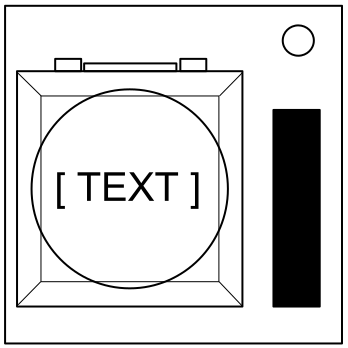

Odnośnie Przycisku
Mógłbyś pomyśleć, że przycisk proszący o naciśnięcie to oczywista sprawa. Właśnie takie myślenie doprowadza do eksplozji.
Zobacz Załącznik A odnośnie rozpoznawania wskaźników.
Zobacz Załącznik B odnośnie rozpoznawania baterii.
Postępuj zgodnie z poniższymi zasadami w podanej kolejności. Wykonaj pierwszą czynność, która ma zastosowanie:
- Niebieski 'PRZERWIJ' : przytrzymaj
- 'DETONUJ' I (baterie >= 2) : naciśnij i puść
- Biały I wskaźnik 'CAR' : przytrzymaj
- (baterie >= 3) I wskaźnik 'FRK' : naciśnij i puść
- Czerwony 'PRZYTRZYMAJ' : naciśnij i puść
- w przeciwnym razie : przytrzymaj
Puszczanie trzymanego Przycisku
Gdy zaczniesz trzymać wciśnięty przycisk, zaświeci się kolorowy pasek po prawej stronie modułu. Na podstawie jego koloru musisz puścić przycisk, gdy licznik czasu wyświetla podaną cyfrę na dowolnej pozycji:
- Żółty pasek: puść na 5.
- Niebieski pasek: puść na 4.
- W przeciwnym razie: puść na 1.